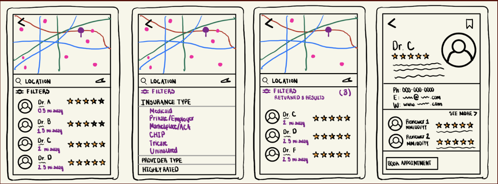

Research, personas, journey maps, storyboards, and iteration.
I conducted source-grounded research using NotebookLM with four sources, paired with hypothesis generation from Claude's Needfinding AI Agent. Comparing the two surfaced where the AI agent's guesses matched the evidence — and where they didn't.
The Claude Needfinding Agent hypothesized that users primarily need to find Black providers and that language barriers were a key constraint. NotebookLM, grounded in real sources, showed something more nuanced.
Three personas, synthesized from the research, capture the range of contexts in which SpeakBirth would be used.
Tanya's journey today involves at least four separate tools, two phone calls, and several hours of work to switch providers. With SpeakBirth, the same journey could take under ten minutes.
Optional: insert a journey map diagram here
Replace with: <img src="images/journey-map.png" alt="User journey map">
Building on the research, three tasks emerged as essential. Each maps to one of the three design goals.
The user enters their location and insurance type, then applies filters including equity rating, provider type, and distance. The app returns a sorted list of providers and the user can tap into any profile to see equity score breakdowns and individual reviews.
The user selects their insurance type and state. The app displays a clear summary of what they are covered for — doula reimbursement, postpartum mental health visits, lactation support — and links directly to a filtered provider list.
The user submits a review using a structured equity rubric (pain acknowledged, concerns heard, would recommend). Other users can filter reviews by date, care type, and rating.
Each storyboard walks through the four key screens of its task, showing functionality without scenario narration.
Insert Storyboard 1 image

Insert Storyboard 2 image
Replace with: <img src="images/storyboard-2.png" alt="Storyboard 2">
Insert Storyboard 3 image
Replace with: <img src="images/storyboard-3.png" alt="Storyboard 3">
The early sketches and the final prototype look meaningfully different. A few key shifts:
The first sketch of the provider filter included a toggle for "Black-owned practice." Research showed this was the wrong frame — what mothers actually need is to know whether providers treat Black patients well, regardless of the provider's own identity. The filter was reworked to surface equity rating instead.
The first version of the benefits navigator asked users to enter their plan name, group number, and state. Sources showed that most users don't know this information off the top of their head. The flow was simplified to two questions: insurance type and state. Result: a one-minute task instead of a five-minute one.
Originally, reviews were going to be a single text field. Research surfaced that the missing feature in existing tools is structured equity data — clear yes/no answers to whether pain was acknowledged, whether concerns were heard, whether the user would recommend the provider to other Black patients. The rubric was added so reviews are useful at a glance, not just in detail.